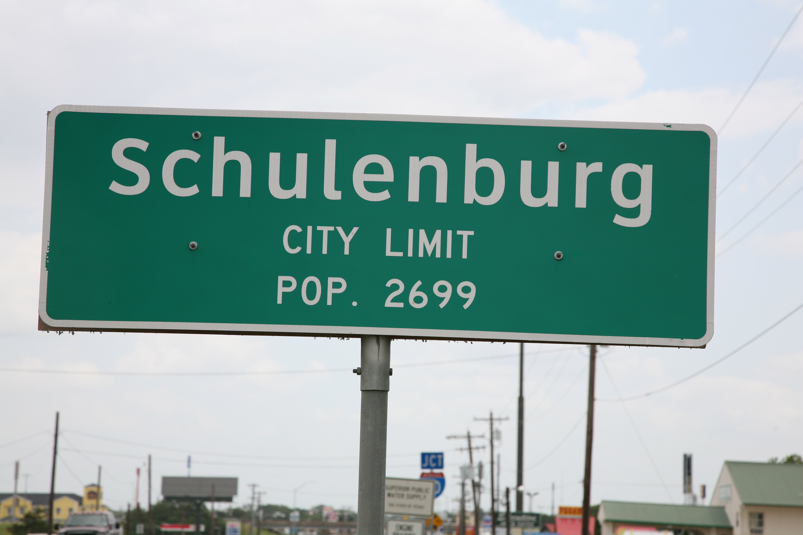
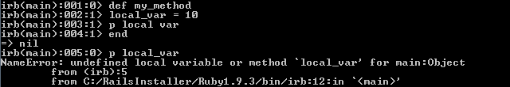
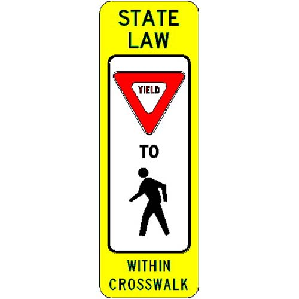

Variable Scope
I chose to discuss the topic of variable scope for this week's technical blog edition. It's something that we already encountered in Phase 0 and, in my opinion, it's an important concept to grasp for the purpose of future understanding of Ruby.
Let me start off by explaining the meaning of scope. Basically, scope defines where in a program a variable is accessible. Here's the list of the 4 main types of variables available in Ruby:
- Global variable
- Class variable
- Instance variable
- Local variable
Besides these 4, there are also constants (have to start with a capital letter and are usually written in all caps, i.e., MYCONSTANT) which are a bit different and 2 pseudo-variables, nil and self, which cannot be assigned values.
To help you understand the concept of variable scope better I will try to use a real-world analogy. Since variables essentially possess some kind of information, let me compare each variable scope to a certain level of authority that governs the behaviour of people. Hopefully, this makes more sense after I break down each variable type.
Local
So, let's go from small to large. The local scope is literally the tiniest scope a variable can have. That means local variables are local to the code block in which they have been declared. If a local variable is declared inside a method or a loop, it cannot be accessed outside of that method or loop.  Local variable names must begin with either an underscore or a lower case letter. Local variable scope could be compared to a city law, for example. A city law governs the behaviour of the inhabitants of that particular city and once you've left the boundaries of the city, you are no longer governed by that law.
Instance
Now on to the instance variables! The naming convention for instance variables is exactly the same as for local variables, except you need to put the @ sign in front.
 Instance variables are local to the specific instances of an object of a class (that's why they are called instance variables). If a class contains an instance variable and one of its objects changes the value of that instance variable, this change would be local only to that exact object and not to all objects of the class.
Instance variables are local to the specific instances of an object of a class (that's why they are called instance variables). If a class contains an instance variable and one of its objects changes the value of that instance variable, this change would be local only to that exact object and not to all objects of the class.
I'd like to think of an instance variable as a state law. Here in California, for example, we have our own set of laws that only applies to our state. But once I cross the border and go to Nevada to play some poker in Vegas, I'm automatically under the jurisdiction of the Nevada state laws.
Class
On the other hand, there are also class variables. These are very similar to instance variables, as you probably could have guessed. Even the syntax is almost identical; you declare a class variable with two @ signs in front of the variable name, like so: A class variable is shared among all instances of that class. Thus, contrary to the last example, if one object of the class changes the value of the class variable, the new value will change for all of the other objects of that class. I know I'm getting a bit ahead of myself by saying this, but think of the class variable as a global variable within the context of a single class! You'll see what I mean soon.
Going back to our analogies, imagine a class variable as something more serious than a state law. In the case of United States, a class variable could be related to the federal law of our country. This law applies to all states with no exception whether they like it or not. If a a federal law is changed, all states are affected by this change; so are all objects of a class affected by the change of value of a class variable.
Global
Finally, there's the global scope. Global variables are pretty easy to understand: they are accessible from anywhere in the Ruby program, regardless of where in the program they are declared. All you need to do in order to declare a global variable is put the $ sign before the variable name: However, I must warn you that the use of global variables in Ruby is strongly discouraged! The main virtue of a global variable is sort of its main flaw at the same time: not only is a global variable visible anywhere in the code of a program, it can also be changed anywhere in the code of a program.
The analogy for a global variable seems pretty obvious... What in this world can hold more authority to a person than the law of one's country? Of course, it's the universal law of our inner consciense - a law programmed inside our souls by God which we all have to abide by. If you don't like this analogy, how about the universal laws of physics? Or, you can think of anything you like at this point, you get the idea.
One last word about a useful method that you might want to use with the variables of any scope. Yes, you can usually tell the scope of a variable simply by looking at its name, but occasionally, you might need to find out the scope programmatically. That's when you are going to need the defined? method. This method will return the scope of the variable referenced, or nil if the variable is not defined in the current context. Here's how it works: